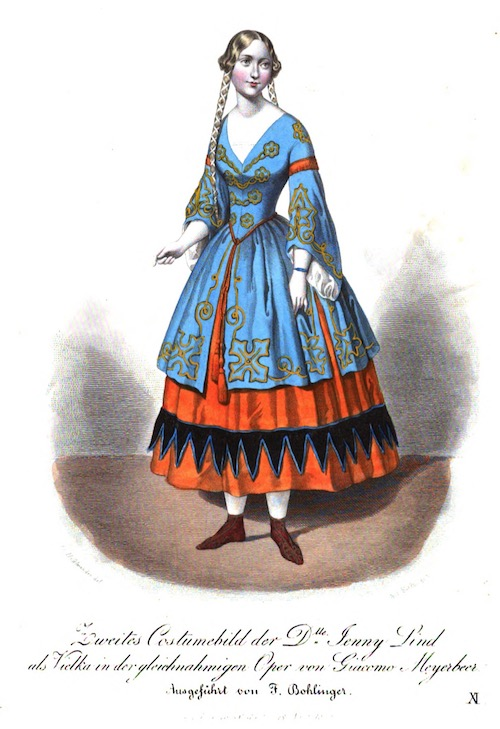
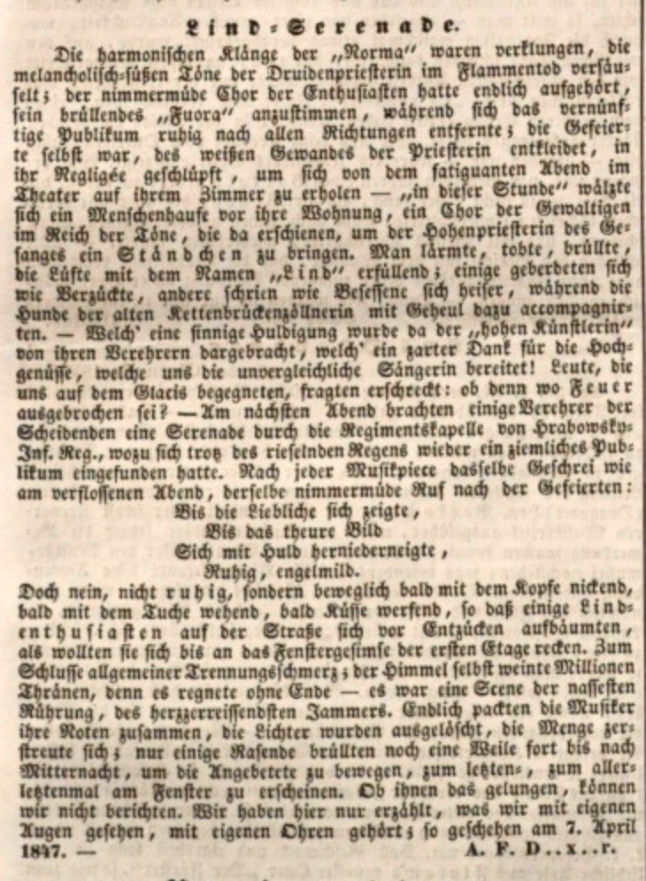

Im April und Mai 1846 sowie zu Jahresbeginn 1847 war es dem Intendanten des Theater an der Wien, Franz Pokorny (1797-1850), gelungen, Jenny Lind für Gastspiele an seinem Haus zu engagieren. Aus diesem Anlass berichtete die gesamte Wiener Presse über die Sängerin.
Bereits am 27. Und 28. Februar wurde Jenny Linds Gastspiel in der Wiener Theaterzeitung und in der Wiener Zeitschrift angekündigt und nach Aufenthalten in Leipzig und Prag traf Jenny Lind am Abend des 19. April in Wien ein. Wie am 26. März berichtet, wohnte Sie am Graben 12, im Haus des Arztes Dr. Vivenot und dessen Familie.
Ihr Debüt am 22. April als Norma hätte Jenny Lind jedoch beinahe aus Nervosität abgesagt. In einem Brief an ihre Freundin Charlotte Birch-Pfeiffer vom folgenden Tag schreibt Lind nämlich:
„Gestern also war der wichtige Tag, da ich in der „Norma" hier auftrat, und der liebe Gott hat mich doch nicht verlassen, obwol ich es verdient hätte meiner unverantwortlichen Angst wegen. Seien Sie mir nur nicht bös, ich bitte Sie. Ich kann aber für das alles gar nichts und ich leide genug selbst dabei! Die drei Tage vorher waren furchtbar und ich war immer im Begriff, die Rückreise anzutreten, und hätte es gethan, wenn ich nicht dadurch so viele Menschen beleidigt hätte! Nun aber bleiben wir hübsch ein Bischen hier und singen noch unsere neunmal und dann können wir ja weiterziehen! Nein, aber dieses Publikum! Nach dem Schluß wurde ich sechzehnmal gerufen und vorher zwölf oder vierzehn, rechnen Sie nur das zusammen und dieser Empfang!“
In den folgenden Wochen trat Jenny Lind in mehreren Opern und Konzerten auf und beeindruckte besonders durch Vorträge von „schwedischen Nationalliedern.“ In einer Beilage zur Wiener Theaterzeitung wird an dieses Gastspiel und die Opern erinnert. Die schwedischen Lieder befinden sich dort, wohl nicht ohne Grund, als Krönung des Porträts.
Neben Berichten über ihre Auftritte veranlasste Jenny Linds Präsenz in Wien manch einen Redakteur zu amüsanten Beiträgen. So konnte man im Unterhaltungsblatt Der Wanderer am 8. und 9. Mai unter dem Titel Charivari folgendes über Börsenkurse, Lindwürmer und Vogelhändler sowie Pferdezügel lesen:
Nach ihrem letzten Auftritt, am 22. Mai 1846, ebenfalls mit schwedischen Liedern, wurde Jenny Lind von einer frenetischen Menge vor dem Theater empfangen. Während das Orchester von Johann Strauß Vater eine Serenade aufführte, versprach die Sängerin, wieder zu kommen.
Jenny Lind kehrte am 31. Dezember 1846 nach Wien zurück. Ursprünglich nur für ein Monat geplant, verlängerte sich dieser Aufenthalt aufgrund von Uneinigkeiten, ob nun Paris oder London den Zuschlag für den folgenden Aufenthalt bekommen sollte, bis zum 8. April. In dieser Zeit trat Jenny Lind nicht nur im Theater an der Wien, besonders erfolgreich in Giacomo Meyerbeers "Vielka" (1), sondern auch in 13 Konzerten und Akademien auf. Darunter ein Konzert von Clara Schumann, ein Benefizkonzert mit Haydns Schöpfung sowie mehrere Auftritte am Kaiserhof. Auch diesmal war das Publikum begeistert und wo auch immer Jenny Lind auftat, war sie der Höhepunkt des Konzerts.
Kostümbild Jenny Lind als „Vielka“, ausgeführt von Friedrich Bohlinger, erschienen am 18.März 1847 in der Wiener Zeitung.
In der Presse finden sich wieder zahlreiche Meldungen, Artikel, Berichte und Erzählungen verschiedenster Art. Am 6. und 8. Februar erschien beispielsweise in der Wiener Zeitschrift eine (fiktive) Erzählung, in der Jenny Lind gar als Dämon bezeichnet wird. Der junge Mann möchte seine Herzdame mit einem Sitzplatz für das Debüt von Jenny Lind beeindrucken - dieser ist aber noch nicht in seinem Besitz. Ob es ihm gelingt die Karte zu organisieren und warum Jenny Lind der Damön des Mannes ist, können Sie weiter hier nachlesen.
Andere berichten von einem Besuch Jenny Linds in der Parfümerie "Zur schönen Orientalin", wo bereits im Frühjahr zuvor ein Parfüm „Extrait double de bouquet de Jenny Lind mit Porträt“ erschienen war oder von Lithografien sowie Münzen und Medaillen mit dem Konterfei der Sängerin.
Über den Abend von Jenny Linds letztem Auftritt im Theater an der Wien am 7. April 1847 als Norma in der gleichnamigen Oper von V. Bellini bzw. das, was sich danach vor dem Theater abgespielt hat, erfährt man aus der Wiener allgemeinen Musik-Zeitung vom 10. April: Dem Redakteur A.F. Draxler zufolge, dürfte das ein buntes und vor allem lautes Treiben gewesen sein, das sich erst nach Mitternacht auflöste. Ob Jenny Lind jedoch Notiz davon nahm, ist nicht überliefert
